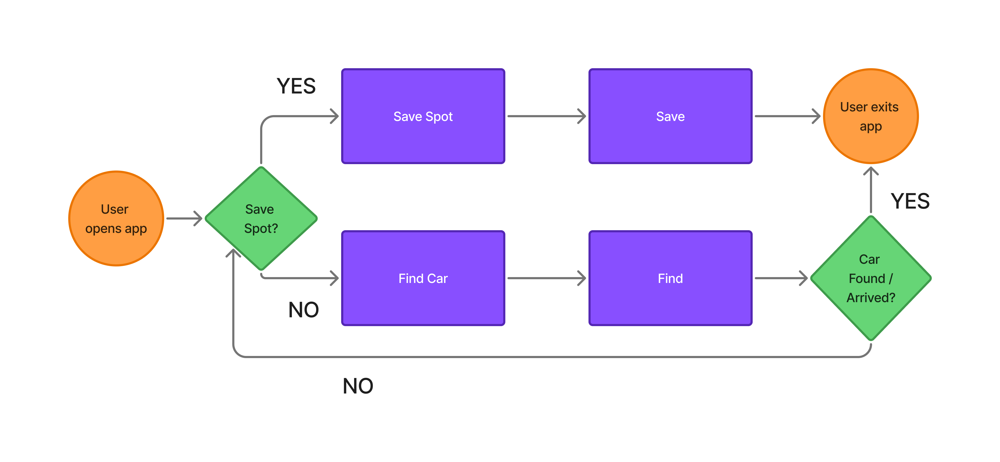
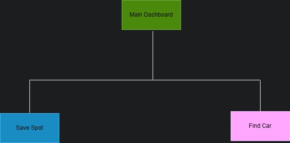
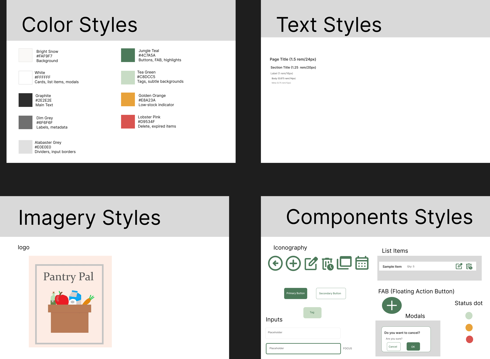
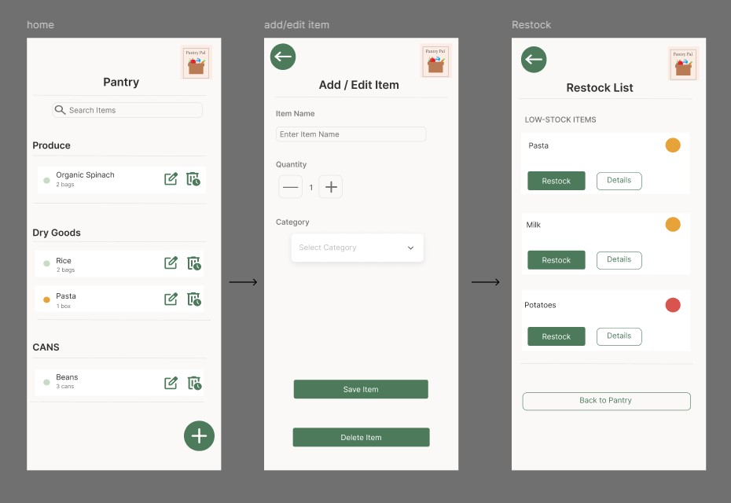

Pantry Pal
Pantry Pal
Overview
Large-scale garages create a "visual sameness" that triggers spatial anxiety. Users often forget their level, section, or even which side of the building they entered.
The goal was to design a zero-friction mobile app that requires only two taps: one to save, one to find
Role
- UX researcher
- UX designer
- UX writer
Tools
- Draw.io
- Figma
- MockFlow
Details
- Duration: November - December 14, 2025
- Company/Client: Myself
Process
The process for this project consists of the following:
Research
- Context study
- Target Audience
- Pain Points
Analysis
- Project Goals
- Use Cases
Ideation
- Journey Map
- Information Architecture
- Visual Design Direction
Design
- Low-Fidelity Wireframes
Hand-off
- High-fidelity wireframes
- Case Study Summary
- Reflection
- Next Steps
Research
Context Study
Users often forget their parking spot due to rushing or being visually fatigued in confusing environments. Existing solutions like standard map apps are too complex, inaccurate in garages, or fail without a signal, making users frustrated.
I focused on three key areas:
- Offline capability through on-device sensors to track location without a signal
- Zero-type interface and a high-contrast UI since users are usually walking while using the app, and parking garages usually have dim light
- Reducing fatigue, stress, and sensory and cognitive overload that usually comes when trying to remember where the car is parked
Target Audience
I identified three primary users:
- Travelers at airports
- Shoppers
- Concert goers
Pain Points
Across research, users consistently struggled with:
- GPS signal loss
- Tiny buttons and exessive typing
- Bright light from bright white UIs
Project Goals
The mobile app needed to:
- Reduce friction in everyday pantry management
- Prioritize accessibility and ease of use
- Ensure clear visual clarity
- Provide clear, at‑a‑glance awareness
Use cases
I want to track my car in an area with no signal
I want to find where my car is in the parking garage among hundreds of similar makes and models
Ideation
User Flow Map
The user flow map focuses on illustrating the step‑by‑step path users undergo when using the app, depending on whether they already saved a spot or are arriving at the garage or parking lot.
Information Architecture
I designed a clear, scalable sitemap to map out the structure and hierarchy of the mobile app, focusing on hierarchical efficiency, zero-tab navigation, and instant utility to reduce stress and cognitive overload. The app is a stripped-down utility-and-task-focused app, and as a result, there are no hidden menus or deep sub-pages present.
Design
Low-Level Wireframes
I created low-level wireframes using MockFlow, which focused on clarity, efficiency, and accessibility. Through clear visual hierarchy, the user can easily gauge which goes where without confusion

Visual Design Direction
I created several stylesheets to establish the color palette, typography, imagery, and several of the UI elements. The aim was to design a .
Handoff
High-Fidelity Wireframes
After some adjustments based on the low-fidelity wireframes, interactive high-fidelity wireframes were created on Figma.
Case Study Summary
Pantry Pal examines how a simple, low‑friction design can help users stay organized without overwhelming them. By focusing on clarity, speed, and calm visual hierarchy, the project addresses common frustrations around food waste, duplicate purchases, and the cognitive load of managing a pantry. Through research, wireframing, and iterative design, the study demonstrates how stripping an experience down to its essentials can create a tool that genuinely supports everyday habits and empowers users to make smarter, more confident decisions.
Reflection
Key Takeaways:
- This project reinforced the value of designing for real‑world friction. People don’t want to manage their pantry—they want it to manage itself. By stripping away unnecessary features and focusing on speed, clarity, and calmness, the app becomes something users actually return to.
- How powerful simplicity can be when it’s grounded in real user needs.
Next Steps
This project laid the groundwork for a more functional site. The next phase will include:
- Creating prototypes and then later a fully functioning website using GitHub and Visual Studio Code
- Conducting more usability testing
- Adding an optional calendar option for expiration dates
- Implementing a dark mode
- Exploring predictive text or common item presets so people don't have to type in items they know every time